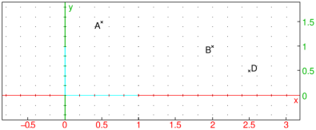
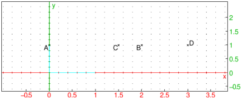

26.14.2 Translations in the plane
See Section
27.12.2
for translations in space.
The
translation
command creates a translation.
translation
takes one mandatory argument and one optional argument:
v
, the translation vector, which can be given as a vector, a list of coordinates, a difference of points or a complex number.
Optionally,
G
, a geometric object.
translation(
v
)
returns a new command which translates by
v
.
translation(
v
,
G
)
returns and draws the translation
G
by the vector
v
.
Examples
t
:=
translation
(1+
i
);
t
(-2)

translation
([1,1],
line
(-2,-
i
))
